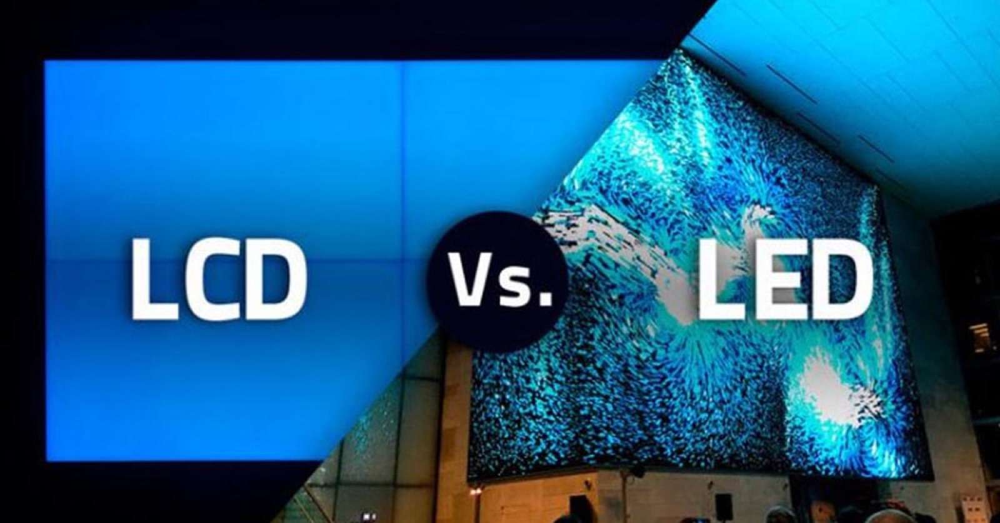
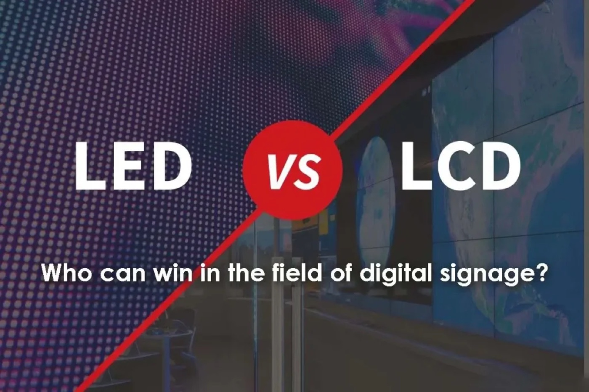
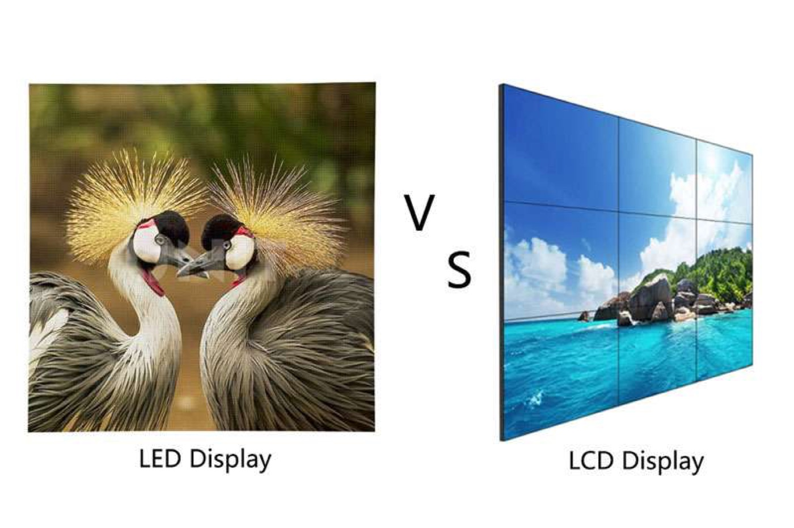
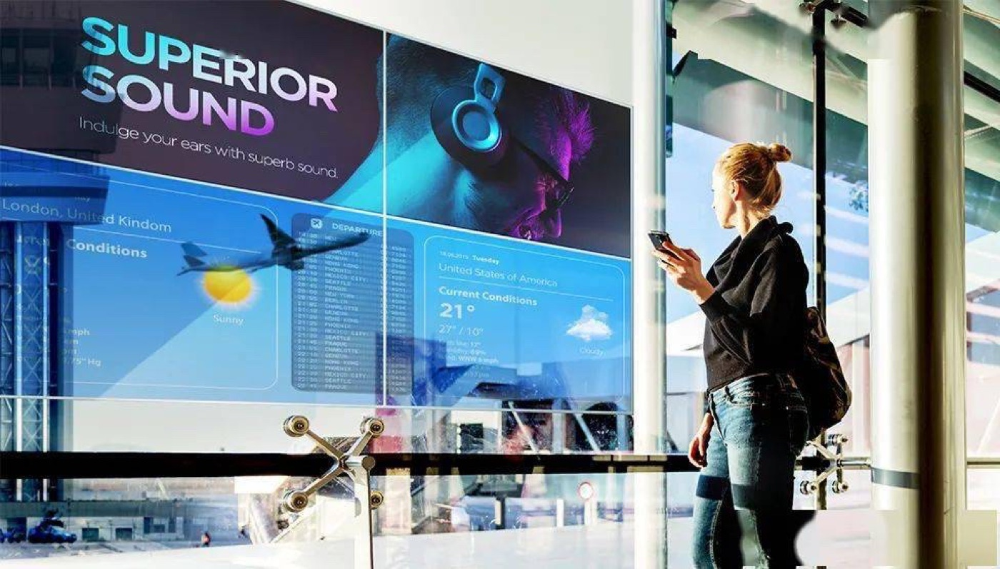
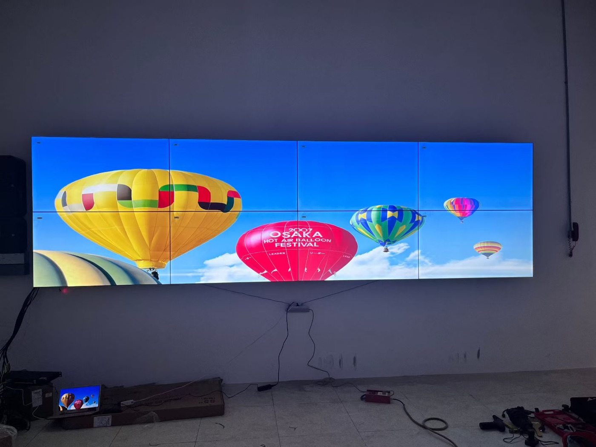

The LED versus LCD debate is usually framed as image quality, but that is the wrong starting point. Both technologies can look excellent in a showroom with the lights down. The differences that decide a real project appear the moment you specify a wall for a bright lobby, a video wall with no visible seam, or a display that must run for a decade without being switched off.
Direct-view LED builds a picture from individual light-emitting diodes on a single panel, so the display has no bezel and no size limit imposed by a glass sheet. An LCD video wall builds a picture from commercial LCD panels tiled together, and every panel edge carries a physical border that the eye reads as a grid. That single structural difference cascades into almost every other trade-off.
Buyers often arrive with a fixed idea about which technology is more expensive. The honest answer is that it depends on size, brightness, and expected life. A small indoor wall viewed from three meters may favor LCD on pure capital cost, while a large bright wall or a seamless feature wall usually favors LED once you account for tiling hardware, calibration, and the labour of aligning many panels.
This guide compares the two technologies on the criteria that actually decide installations: bezel, brightness, contrast, scaling, service, and total cost of ownership. The goal is not to crown a winner but to make the choice obvious once the venue is described.

A direct-view LED panel is a matrix of red, green, and blue diodes driven as pixels. Because each pixel makes its own light, the panel can be built in any module size and joined edge to edge with no framing, which is what allows a truly seamless wall of almost any dimension. Brightness is produced directly, so LED reaches levels that LCD can only approach with heavy backlighting and clever light management.
An LCD video wall works differently. A backlight shines through a liquid-crystal layer that twists to gate each pixel, and a colour filter creates the image. The liquid crystal blocks light rather than emitting it, so black is never perfectly black and the panel needs a bright uniform backlight to compete with a sunlit room. Panels can be tiled to reach large sizes, but each unit keeps a border, typically a few millimetres wide, that creates the grid viewers notice most on fine graphics and moving content.
That difference in how light is made explains the contrast gap. A COB LED panel such as the CV-PRO series can reach a 10000:1 contrast ratio because dark pixels simply switch off, while an LCD panel keeps a residual glow. In a dark control room the LED wall shows deep blacks and clean detail; the LCD wall shows a grey veil over the whole image.
For very large canvases, LED also avoids the compounding alignment problem of tiling. Ten LCD panels mean ten bezels to align and colour-match; ten LED modules behave as one surface. At scale, that is often the factor that tips a project toward LED even when the two options are close on paper.
| Attribute | Direct-View LED | LCD Video Wall |
|---|---|---|
| Bezel | None; seamless at any size | Visible border on every panel |
| Peak brightness | 800 - 2500 nits indoors, higher outdoors | 300 - 800 nits typical |
| Contrast | Up to 10000:1 with COB | Limited by backlight bleed |
| Maximum size | Effectively unlimited by tiling modules | Practical limits on panel count and alignment |
| Lifespan | 100,000 hours rated | Around 50,000 hours to half brightness |
| Service | Replace a module from front or rear | Replace a whole panel unit |
| Viewing angle | Very wide, uniform colour | Narrows off-axis; colour shift at edges |
| Environment | Indoor and outdoor with IP-rated cabinets | Indoor, controlled light preferred |

Ambient light is the fairest test of the two technologies because it attacks the same weakness in each. An LCD panel fights glare with a brighter backlight, but raising the backlight washes out blacks and lifts the whole image toward grey. An LED panel simply turns up the diodes while keeping black pixels off, so contrast survives the extra light. This is why a bright atrium, a shop window, or any space with daylight favors LED.
Contrast perception depends on the ratio between the brightest and darkest parts of the image, not on absolute brightness alone. A video wall showing a dark scene with small bright highlights, such as a night skyline or a product shot on a black background, looks dramatically better on LED because the black stays black. On LCD the same scene looks flat, and the difference is obvious to any viewer standing in front of it.
Looking angle compounds the problem in tiled installations. LCD panels lose brightness and shift colour as the viewer moves off-axis, so a wall that matches perfectly at the centre can look patchy from the left of the room. Direct-view LED holds colour across a wide angle, which matters in lobbies, concourses, and control rooms where people stand to the side of the wall rather than directly in front of it.
There is still a role for LCD. In a small, dimly lit room where a wall of two or four panels is enough, an LCD video wall can be the economical choice, and it integrates easily with existing AV racks. The mistake is specifying LCD for a bright, large, or seamless application purely on purchase price, then spending the difference later on tiling hardware and service.
| Scenario | Recommended | Why |
|---|---|---|
| Bright retail window | Direct-view LED | Survives daylight glare that washes out LCD |
| Dark control room | Direct-view LED | Deep blacks and no bezel grid on maps and video |
| Small indoor meeting wall | LCD video wall | Low capital cost at two to four panels |
| Seamless feature wall | Direct-view LED | No bezels to interrupt branding or graphics |
| Outdoor or semi-outdoor | Direct-view LED | IP65 cabinets and 5000+ nits brightness |
| Large lobby or concourse | Direct-view LED | Uniform colour across a wide viewing angle |
| Temporary exhibit | Direct-view LED rental | Lightweight cabinets that rig and strike fast |

Capital cost is only the first line of the spreadsheet. A video wall has to be fed, cooled, calibrated, and eventually repaired, and those running costs differ sharply between the two technologies. LED panels rated for 100,000 hours often outlast the building fit-out that surrounds them, while LCD panels typically fade to half brightness in roughly half that time, which means a mid-life replacement cycle that LED avoids.
Power and cooling deserve a fair comparison rather than an assumption. LED is efficient per unit of brightness, but a bright wall draws real current that must be planned into the distribution board. LCD runs cooler per panel but needs its own backlight power and usually a continuous HVAC load in a sealed room. Both need the electrical design done properly; neither is free to run.
Service is where LED pulls ahead in large installations. A failed module can be swapped in minutes from the front or the rear without touching neighbouring panels, so the wall stays on air at reduced resolution rather than going dark. An LCD failure means replacing a whole panel unit, and a replacement from a later production batch may not colour-match the originals without recalibration.
Add the cost of tiling hardware, mounting frames, and the labour of aligning and calibrating many LCD panels, and the two technologies frequently converge in price at larger sizes. The decision then rests on the application rather than the budget: brightness, seamless geometry, and service life point to LED, while a small dim room may still point to LCD.
Asia Vision Technology manufactures both sides of this comparison honestly, so our advice is not tied to one technology. The CV-PRO COB series delivers a 10000:1 contrast ratio and refresh rates of 3840 Hz or higher indoors, while the D-PRO outdoor line is rated IP65 at more than 8000 nits for daylight applications. All products carry CE, FCC, and RoHS certification.
We cover pixel pitches from P0.9 to P20, which means a project can be specified at the density the viewing distance actually requires rather than forced onto whatever panel happens to be in stock. Orders ship in 15 to 20 working days with a 3-year standard warranty and a size-matched spare-parts recommendation.

For this requirement our range covers it directly: the M-PRO indoor series (16:9 cabinet) and the RH-PRO fine-pitch COB.